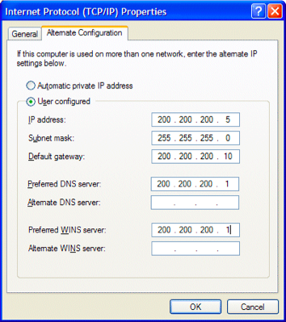

IPv4 Address Classes <<
Previous Next >> IPv6
Assigning an IP Address 分配IP地址
There are four components that make up a properly configured IPv4 network client: IP address, subnet mask, default gateway, and domain name system (DNS) IP address.
The first component of a properly configured IPv4 network client is the IP address. This is the logical name assigned to that particular host. In the image below, you can see that the host is assigned 200.200.200.5. No other device on the network can have this exact IP address or conflicts will occur. This IP address is like the device’s first name: no one else in its family (or network in this case) can have this IP address.
正確配置IPv4網絡客戶端的過程由四個部分組成：IP地址，子網掩碼，默認網關和域名系統（DNS）IP地址。
正確配置的IPv4網絡客戶端的第一部分是IP地址。 這是分配給該特定主機的邏輯名稱。 在下圖中，您可以看到為主機分配了200.200.200.5。 網絡上的任何其他設備都不能具有此確切的IP地址，否則會發生衝突。 該IP地址就像設備的名字一樣：其係列（在這種情況下為網絡）中沒有其他人可以使用此IP地址。

Internet protocol (TCP/IP) properties window. Image used under CC-BY license from Jason Dion.
The second component of a properly configured IPv4 network client is the subnet mask. The subnet mask is required to ensure that the host knows what other IP addresses are on its network (which is defined by the subnet mask). In this example, the default class C subnet mask was used, which is 255.255.255.0. This tells the client that its host’s IP address resides on the 200.200.200.0 network, so other IPs in the 200.200.200.x range will be in the same subnet.
The third component of a properly configured IPv4 network client is the default gateway. This is the IP address of the device (normally a router) that connects this particular network to another network. For example, if our host wants to talk to someone outside of the 200.200.200.0 network, it would send the message to this default gateway (200.200.200.10 in our example), and this device will forward that request outside of the network.
The final component of a properly configured IPv4 network client is the DNS server IP address, or WINS server IP. The DNS server is the domain name system server, and is responsible for converting domain names into IP addresses for the host. For example, if you wanted to go to www.google.com, your host doesn’t know where that is, but the DNS server does know the location. Providing your host with the DNS server address allows it to send the request to the DNS server, which will convert the name into an IP address, and send that address back to the requesting host, which can then go to that IP address with the request. A WINS server is like a DNS server, but is specific to Windows NetBIOS computer names and IP addresses. WINS is usually used inside a Windows network, while DNS is used for clients on the Internet.
正確配置的IPv4網絡客戶端的第二個組件是子網掩碼。需要子網掩碼以確保主機知道其網絡上還有哪些其他IP地址（由子網掩碼定義）。在此示例中，使用了默認的C類子網掩碼，即255.255.255.0。這告訴客戶端，其主機的IP地址位於200.200.200.0網絡上，因此200.200.200.x範圍內的其他IP將位於同一子網中。
正確配置的IPv4網絡客戶端的第三個組件是默認網關。這是將該特定網絡連接到另一個網絡的設備（通常是路由器）的IP地址。例如，如果我們的主機希望與200.200.200.0網絡外部的某人交談，則它將消息發送到該默認網關（在我們的示例中為200.200.200.10），並且該設備將把該請求轉發到網絡外部。
正確配置的IPv4網絡客戶端的最後一個組件是DNS服務器IP地址或WINS服務器IP。 DNS服務器是域名系統服務器，並負責將域名轉換為主機的IP地址。例如，如果您想訪問www.google.com，則您的主機不知道該地址在哪裡，但是DNS服務器確實知道該位置。為您的主機提供DNS服務器地址可以使其向DNS服務器發送請求，DNS服務器會將名稱轉換為IP地址，然後將該地址發送回請求主機，然後主機可以隨請求轉到該IP地址。 WINS服務器類似於DNS服務器，但特定於Windows NetBIOS計算機名稱和IP地址。 WINS通常在Windows網絡內部使用，而DNS用於Internet上的客戶端。
IP addresses are assigned to a client or workstation using either static or dynamic configuration. In static configuration, we find a simple method for assigning an address, but it is more time-consuming. This method requires the technician to input the four required pieces of information that make up an address (IP address, subnet mask, default gateway, and DNS server IP address). This is prone to human errors, since a single, mistyped digit will cause the device to be unable to connect to the network. Also, because each client has to be configured individually and no repeating of IP addresses is allowed, this requires detailed documentation of the used IP addresses and becomes impractical for large networks very quickly.
Dynamic configuration is much quicker and easier. There are two dynamic configuration methods: DHCP and BOOTP. Dynamic host configuration protocol (DHCP) is simple for large networks and less confusing, because a server handles the assignment of the IP addresses for the client, as well as the subnet mask, default gateway, and DNS server. In practice, the network administrator simply provides the DHCP server with a range of IP addresses to hand out, and the DHCP server does all the work for the network administrator. The DHCP server gives a client an IP address and the associated parameters, as well as a “lease time.” The lease time is the specific amount of time the client is allowed to use that IP address. When the lease is nearing the end of its term, the DHCP server gives the client the option of keeping the lease longer (if it is still using it), or the server can take the lease back to reuse (if it cannot get in touch with the client at the lease renewal). Most large-scale networks and most home networks use DHCP for configuration.
Bootstrap protocol, more commonly referred to as BOOTP, is an older dynamic addressing protocol and only assigns IP addresses, subnet masks, and default gateways. BOOTP doesn’t support providing DNS server information or WINS server information. BOOTP is considered obsolete now, as it has been replaced by DHCP. DHCP, on the other hand, is based upon the legacy BOOTP protocol but added DNS, WINS and other variables that are related to newer standards like voice-over IP. If your network is dynamically configured, DHCP is most likely in use.
IP地址使用靜態或動態配置分配給客戶端或工作站。在靜態配置中，我們找到了一種分配地址的簡單方法，但是這比較耗時。此方法要求技術人員輸入組成地址（IP地址，子網掩碼，默認網關和DNS服務器IP地址）的四個必需信息。這很容易發生人為錯誤，因為單個錯誤鍵入的數字將導致設備無法連接到網絡。另外，由於必須分別配置每個客戶端，並且不允許重複IP地址，因此這需要使用的IP地址的詳細文檔，並且對於大型網絡來說非常不切實際。
動態配置更快，更容易。動態配置方法有兩種：DHCP和BOOTP。動態主機配置協議（DHCP）對於大型網絡來說很簡單，並且不易混淆，因為服務器可以處理客戶端IP地址的分配以及子網掩碼，默認網關和DNS服務器。實際上，網絡管理員只需為DHCP服務器提供一系列IP地址即可分發，而DHCP服務器將為網絡管理員完成所有工作。 DHCP服務器為客戶端提供IP地址和關聯的參數，以及“租用時間”。租用時間是允許客戶端使用該IP地址的特定時間。當租約即將到期時，DHCP服務器會為客戶端提供延長租約（如果仍在使用租約）的選項，或者服務器可以將租約重新使用（如果無法聯繫）與客戶續約）。大多數大型網絡和大多數家庭網絡都使用DHCP進行配置。
Bootstrap協議（通常稱為BOOTP）是一種較舊的動態尋址協議，僅分配IP地址，子網掩碼和默認網關。 BOOTP不支持提供DNS服務器信息或WINS服務器信息。 BOOTP現在已被淘汰，因為它已被DHCP取代。另一方面，DHCP基於舊式BOOTP協議，但增加了DNS，WINS和其他與諸如語音IP之類的新標準相關的變量。如果您的網絡是動態配置的，則最有可能使用DHCP。
IPv4 Address Classes <<
Previous Next >> IPv6